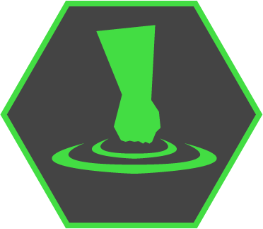
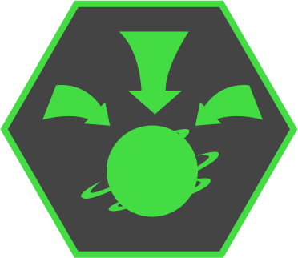
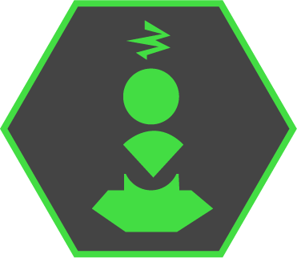
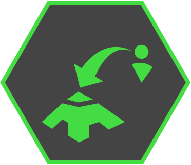
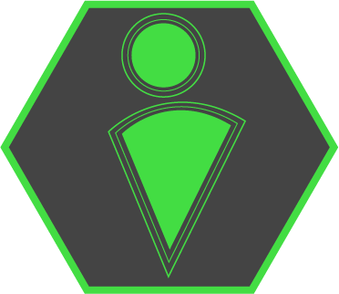

Welcome to Firewall!
After a hard day's work you have come home to relax, grab a snack and watch some Netflix on your laptop...however, your computer has been infected with horrible viruses!
As the infection worsens and the viruses multiply, will you be able to fight them off and save your hard drive?
Survive endless waves of viruses, malware, and other nasties for as long as you can! Keep them away from your blue core, too many hits and you will lose.
Use your various computer hacking skills and abilities to keep harmful viruses away from the core and knock them into the pits to destroy them.
-Controls-
Left joystick to move around, right to shove enemies in any direction.
Left Trigger controls your secondary movement ability.
Right Trigger controls your secondary attack ability.
 Blast: Emit a powerful blast to push all viruses away from you!
 Grav Bomb: Spawn a quarantine to draw viruses towards a central point.
 Stun Trap: Lay down firewalls to stop viruses in their tracks.
 Teleport: Leave behind a restore point you may return to.
 Invincibility: Use a proxy to temporarily become immune to damage.
Blink: Jump forward a small distance with rapid file navigation!